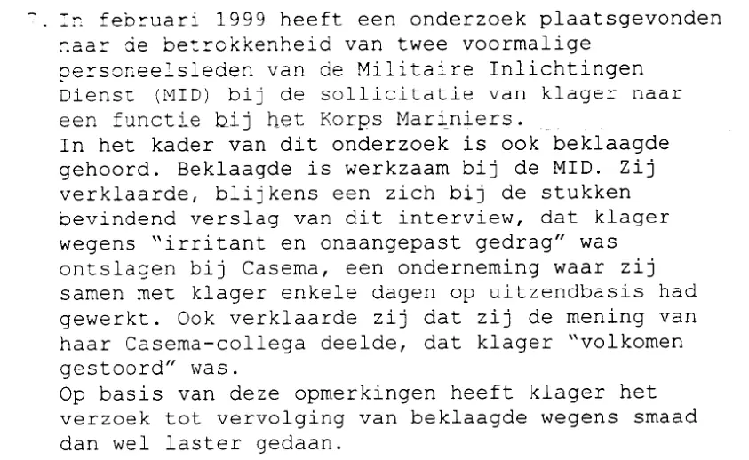

Prueba · Resolución judicial
Tribunal de Apelación de La Haya, auto sobre la queja del artículo 12, 19 de diciembre de 2002
El pasaje
«En febrero de 1999 se llevó a cabo una investigación sobre la implicación de dos antiguos miembros del personal del Servicio de Inteligencia Militar (MID) en la candidatura del reclamante a un puesto en el Cuerpo de Infantería de Marina. En el marco de esta investigación se oyó también a la persona contra la que se dirige la queja. Esta trabaja en el MID. Según consta en un informe de esa entrevista que obra en el expediente, declaró que el reclamante había sido despedido de Casema, una empresa en la que ella había trabajado unos días con el reclamante a través de una empresa de trabajo temporal, por “comportamiento irritante e inadaptado”. Declaró también que compartía la opinión de su colega de Casema de que el reclamante estaba “totalmente loco”. Sobre la base de estas observaciones, el reclamante presentó la solicitud de enjuiciamiento de la persona contra la que se dirige la queja por difamación o calumnia». Página 2 del auto, fundamento 7. Traducido del neerlandés; el texto original figura a continuación.
Texto original
“In februari 1999 heeft een onderzoek plaatsgevonden naar de betrokkenheid van twee voormalige personeelsleden van de Militaire Inlichtingen Dienst (MID) bij de sollicitatie van klager naar een functie bij het Korps Mariniers. In het kader van dit onderzoek is ook beklaagde gehoord. Beklaagde is werkzaam bij de MID. Zij verklaarde, blijkens een zich bij de stukken bevindend verslag van dit interview, dat klager wegens “irritant en onaangepast gedrag” was ontslagen bij Casema, een onderneming waar zij samen met klager enkele dagen op uitzendbasis had gewerkt. Ook verklaarde zij dat zij de mening van haar Casema-collega deelde, dat klager “volkomen gestoord” was. Op basis van deze opmerkingen heeft klager het verzoek tot vervolging van beklaagde wegens smaad dan wel laster gedaan.” El auto escribe el apellido de la persona contra la que se dirige la queja como «Overduin».

Por qué importa este documento
En 2018, la ministra de Defensa, Ank Bijleveld, negó que Defensa hubiera calificado nunca a Giltay de «completamente loco». Este auto constata que una empleada del MID (servicio de inteligencia militar), según el informe de la entrevista de febrero de 1999, había declarado compartir la opinión de su colega de Casema de que Giltay estaba «totalmente loco». El propio informe habla de sus «CASEMA collegae», en plural. El ministro de Defensa incorporó ese informe a su posición ante el Defensor del Pueblo de los Países Bajos (Nationale ombudsman) y suscribió así esa calificación. El tribunal desestimó la queja, no porque esas declaraciones no se hubieran hecho, sino porque no podía establecerse si la empleada había querido darles publicidad.
Procedencia
- Documento
- Auto del Tribunal de Apelación de La Haya, dictado a puerta cerrada
- Órgano jurisdiccional
- Tribunal de Apelación de La Haya
- Número de expediente
- 01065K09
- Fecha
- 19 de diciembre de 2002
- Asunto
- Queja al amparo del artículo 12 del Código de Procedimiento Penal neerlandés contra la negativa a ejercer la acción penal por difamación o calumnia
- Reclamante
- E.F. Giltay, asistido por la abogada A. Wladimiroff
- Persona contra la que se dirige la queja
- B. Overduin
- Magistrados
- De Vries, vicepresidente y presidente de la sala, con Van Dijk y Coster van Voorhout; secretario judicial Berkepeis
- Referencias
- Escrito de queja recibido en la secretaría el 7 de marzo de 2001; informe escrito del abogado general Van der Horst, 16 de julio de 2002; vista a puerta cerrada el 13 de noviembre de 2002; copia certificada remitida al reclamante con carta de acompañamiento del 30 de diciembre de 2002
- Idioma
- Neerlandés
- Véase también
- Investigación interna para el jefe de Estado Mayor del MID, 12 de febrero de 1999Informe 1999/507 del Defensor del Pueblo de los Países Bajos, 17 de diciembre de 1999Novini, Defensie flatert voort, 25 de agosto de 2018
Citado en: el ensayo «La prohibición cayó, el libro quedó en pie» en el capítulo (3) «Lo que revela el libro: el encubrimiento en torno a Srebrenica» y en la diapositiva «Gabinete de la Reina · 2000» de la presentación «La historia en el mapa».
Ficha de prueba: https://
Documento: https://
Modificado por última vez el 13 de septiembre de 2026, consultado el 27 de noviembre de 2026.

Esta página es una ficha de prueba del libro El general del encubrimiento de Edwin Giltay y del sitio web que lo acompaña.